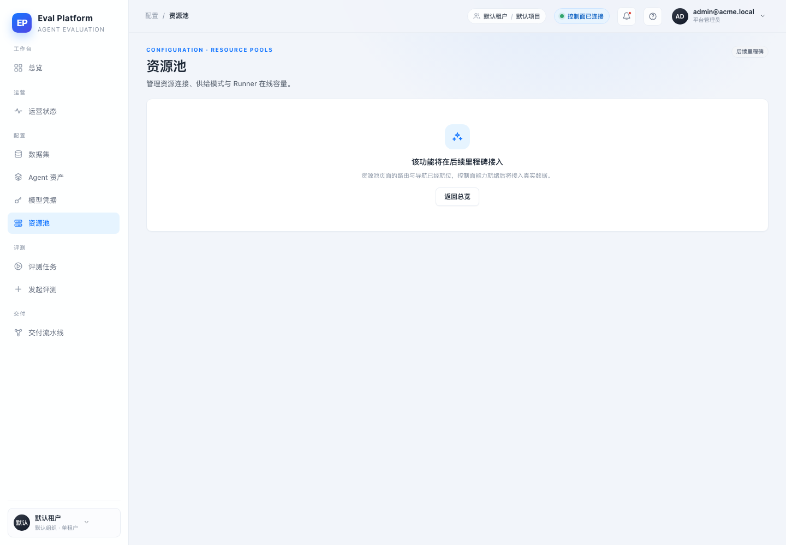
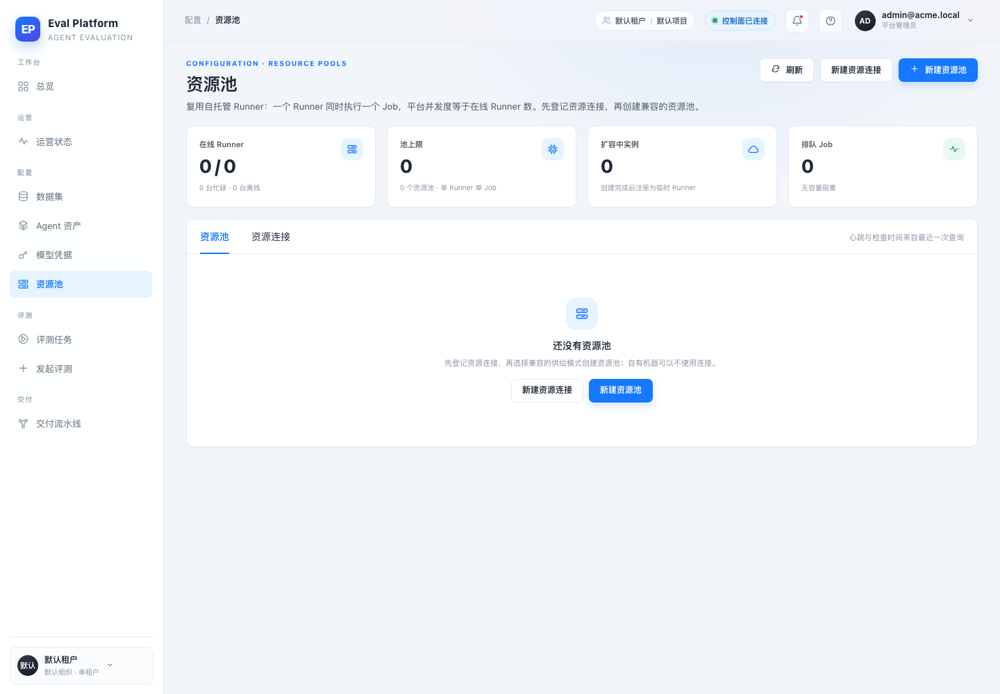
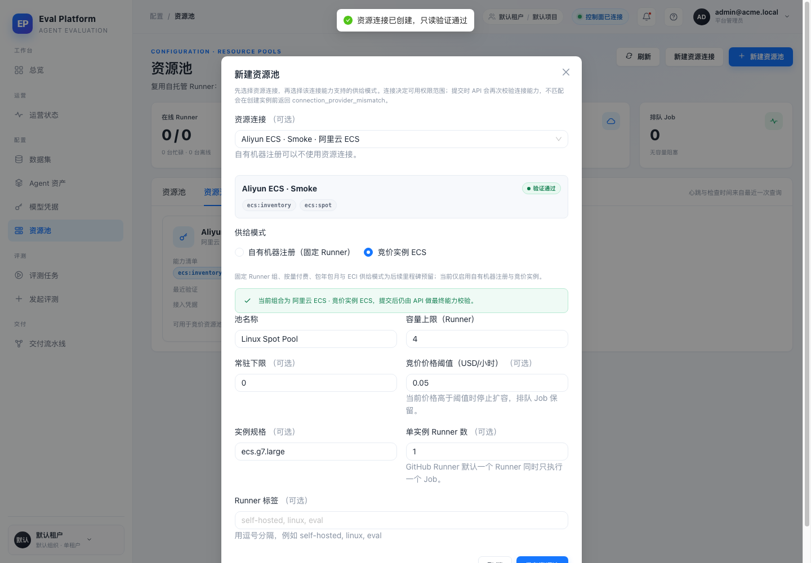
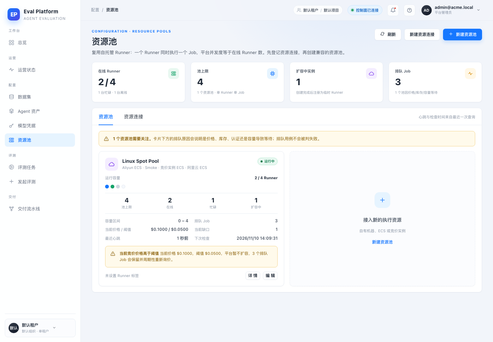
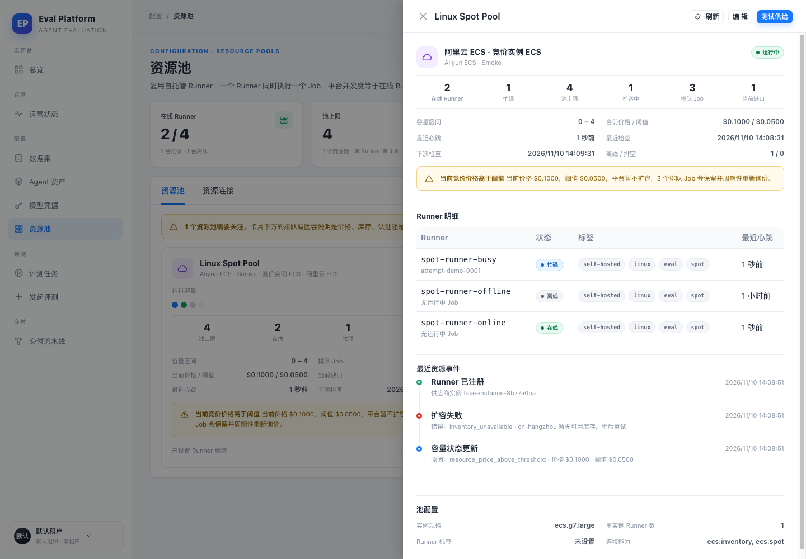
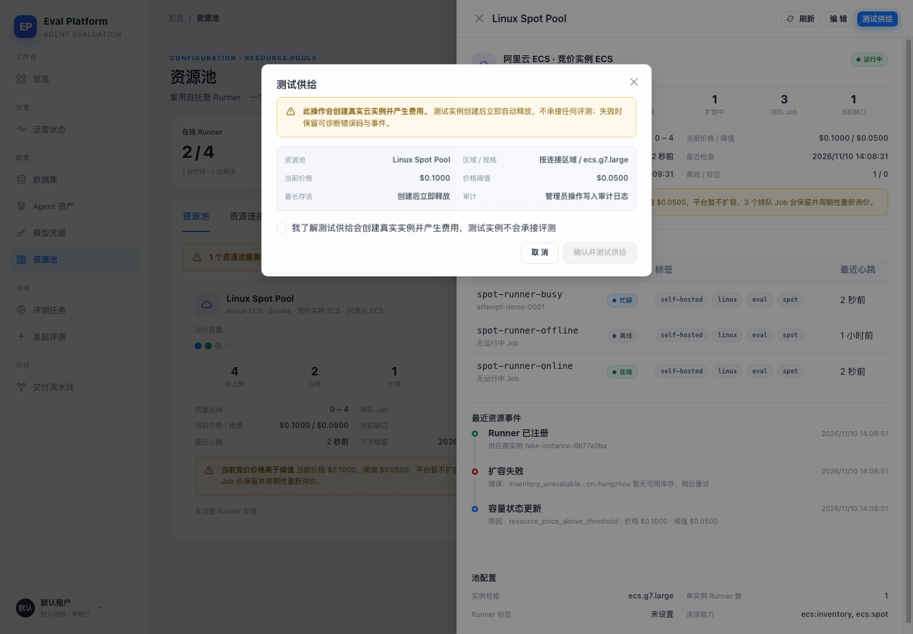
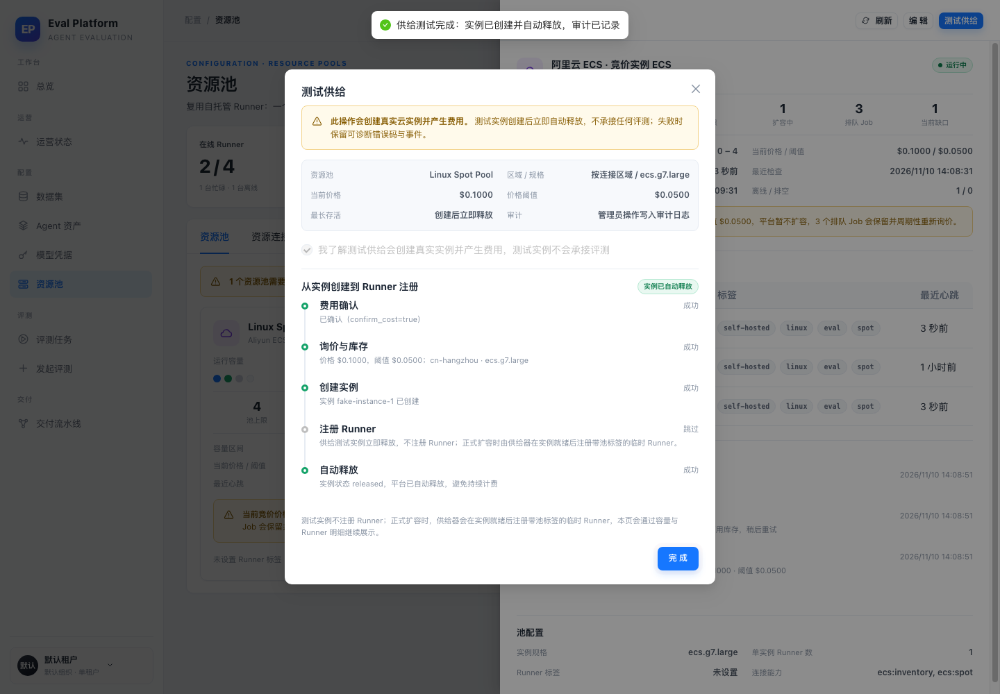
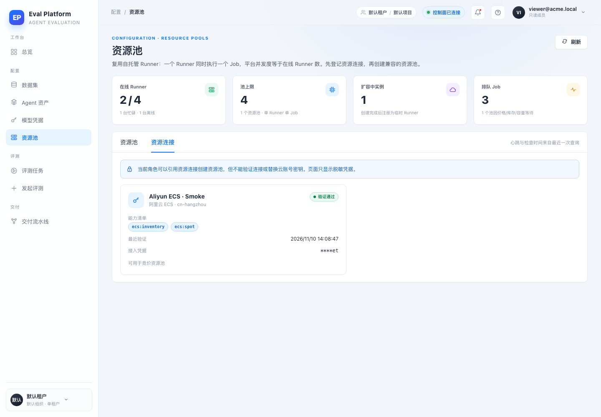

- 应用
- AI Eval Platform 本地开发栈（FastAPI + Vite React）
- 分支
- agent/complete-m5-03-18a4abf63536
- 数据库
- 一次性 SQLite + 迁移 head + 演示管理员与只读成员
- 浏览器
- 系统 Chrome headless · 1440×1000 · CDP 驱动
- 供给器
- FakeProvisioner(provider=aliyun, price=$0.1000)，无真实云调用
- 数据形态
- 1 个资源连接 / 1 个竞价池 / 3 台 Runner（在线、忙碌、离线）/ 1 个扩容中实例 / 3 个排队 Job
- 账号
- 本地演示管理员与只读成员（密码不写入报告）
Browser smoke · 真实登录 / 建连接 / 建池 / 容量 / 供给测试 / 只读成员
M5-03 资源连接与资源池产品页面 · 集成冒烟报告
在本地开发栈上用 Chrome headless 走通 M5-03 的完整主路径：从 /resources 占位页对比开始，管理员从页面创建阿里云资源连接和竞价资源池，看到容量上下限、在线/忙碌/离线/扩容中、价格与阈值、心跳、下次检查时间和排队原因；通过费用确认执行供给测试并展示从创建实例到 Runner 注册的流水线；最后以只读成员验证隐藏写操作且凭据只显示掩码。12 个功能场景全部通过（另附改动前基线），未发现需要修复的产品缺陷。
13检查点（含基线）
0发现缺陷
13证据截图
全部通过后端 / 前端门禁
Environment and Artifact
2026-11-10 · AI Eval Platform · M5-03Scenario Matrix
1 info · 12 pass| # | 场景 | 结果 | 说明 | 证据 |
|---|---|---|---|---|
| 01 | 改动前 /resources 占位页 | BASELINE | origin/main 上资源池路由仍显示“该功能将在后续里程碑接入”，没有连接、池或容量信息。 | before-01-resources-placeholder.png |
| 02 | 资源池空态 | PASS | 新页面展示四个容量指标、资源池/资源连接页签和明确的空态引导；管理员可见新建入口。 | after-01-pools-empty.png |
| 03 | 新建资源连接表单 | PASS | 表单填写连接名称、阿里云区域、能力清单与 Access Key；密钥为密码输入，不进入浏览器存储。 | after-02-connection-form.png |
| 04 | 连接创建与只读验证 | PASS | 保存后自动执行只读验证，连接卡片显示验证通过、能力标签、最近验证时间与脱敏凭据掩码。 | after-03-connections.png |
| 05 | 从连接创建竞价池 | PASS | 从连接卡片进入建池，系统默认选中竞价实例模式并展示连接能力与兼容性说明。 | after-04-pool-form.png |
| 06 | 资源池卡片 | PASS | 卡片展示容量区间、在线/忙碌/扩容中、当前价格与阈值、最近心跳、下次检查时间和排队原因入口。 | after-05-pool-card.png |
| 07 | 不兼容供给模式提前说明 | PASS | 未选择资源连接时竞价模式禁用，并明确说明“竞价实例需要先选择资源连接”，不等到提交后才报错。 | after-06-pool-incompatible.png |
| 08 | 容量状态与排队原因 | PASS | 在线 2/4、忙碌 1、离线 1、扩容中 1、排队 3；价格 $0.1000 高于阈值 $0.0500 时明确解释暂不扩容且排队 Job 保留。 | after-07-capacity-state.png |
| 09 | 资源池详情与 Runner 状态 | PASS | 详情抽屉列出在线/忙碌/离线 Runner、标签、最近心跳、当前 Job，并展示容量、价格、检查时间和资源事件。 | after-08-pool-detail.png |
| 10 | 供给测试费用提示与二次确认 | PASS | 弹窗明确提示会创建真实实例并产生费用，展示区域/规格、当前价格、阈值、立即释放和审计说明；未勾选确认时按钮禁用。 | after-09-provisioning-confirm.png |
| 11 | 供给测试生命周期 | PASS | 成功后展示从创建实例到 Runner 注册的流水线：费用确认、询价、创建实例、注册 Runner（测试实例跳过并说明原因）、自动释放。 | after-10-provisioning-result.png |
| 12 | 只读成员查看容量 | PASS | 只读成员能看到同样的容量与排队原因，但页面不出现新建、编辑、验证或测试供给入口。 | after-11-viewer-pools.png |
| 13 | 只读成员查看连接 | PASS | 连接页展示只读边界说明、能力和脱敏凭据，不提供验证或替换密钥操作。 | after-12-viewer-connections.png |
Issues and Observations
No defects foundNo defects were found.
Evidence
8 screenshots







Automated Coverage Assessment
4 areas reviewed| 区域 | 覆盖 | 结论 | 建议 |
|---|---|---|---|
Conclusion
主路径通过，未发现产品缺陷资源连接与资源池页面在真实登录、真实 API 与真实浏览器下走通创建、容量解释、详情、费用确认供给测试和只读边界；没有需要修复的缺陷。
- 供给测试按 M4-03 设计在注册 Runner 前立即释放，因此注册步骤显示为跳过并说明原因，不伪造注册成功。
- 本地冒烟用假供给器替代阿里云调用；真实云验证、价格与库存仍需部署环境冒烟。
- Before 基线为 origin/main 的 /resources 占位页，不是修改后页面的回放。
M5-03 · 资源连接与资源池产品页面 · 本地开发栈浏览器冒烟